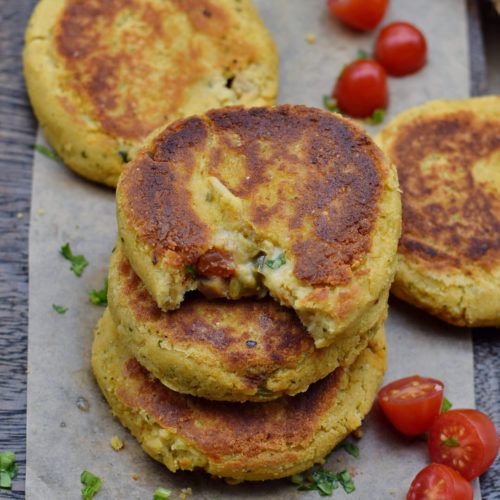

Cauliflower Patties

Description
This is a vegan and gluten free recipe
which is easy to make. It consists of mainly cauliflower and chickpeas and can be used as
burger patties, snacks, side dish or more.
Ingredients
Wet Ingredients
- 1/2 small (250g) califlower head
- 1 can (280g) chickpeas
- 2 tbsp of finely chopped parsley
- 2 cloves of minced garlic
- coconut or vegetable oil for frying
Dry Ingredients
- 1/2 cup (60g) chickpea flour
- 1 1/2 tbsp of ground flax seeds
- 1 tsp onion powder
- 1/2 tsp of ground cumin
- salt and pepper for taste
Steps
- Cook the cauliflower florets in salted water until tender,
dicard the water.
- Meanwhile mix all the dry ingredients inside a bowl and set them aside for later
- Put the dry ingredients inside a food processor to pulse them. (don't over process )
- Add dry ingredients to wet ones and mix them.
- Form 8-10 patties and fry them with oil from both sides until they are golden.
(depending on heat it takes about 5 minutes each side)
- Serve with dip of choice
Back to top
Back to home